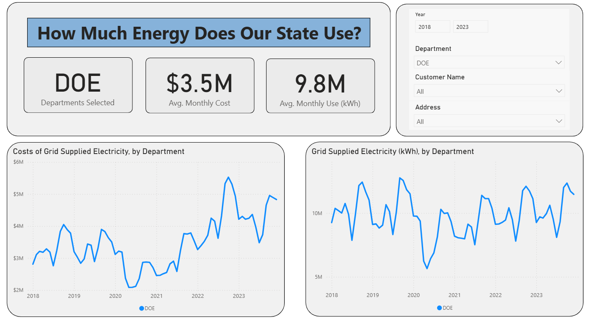
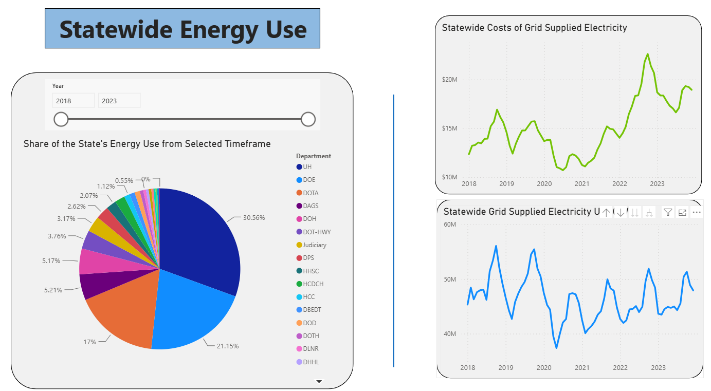

Flood zones and solar permitting
Interagency analysis translating FEMA substantial-improvement requirements into practical answers for a solar permitting task force. Personal contact directory removed.
Read the memo →Representative work from one PlanKind member, organized by the capability it demonstrates. Collaborative work retains attribution; archived pieces reflect their original dates and context.
Policy research, cost analysis, permitting guidance, and public communication developed in a public-sector energy role.
Interagency analysis translating FEMA substantial-improvement requirements into practical answers for a solar permitting task force. Personal contact directory removed.
Read the memo →Explains project pricing, avoided energy costs, and how long-term contracts can reduce exposure to volatile oil prices.
Download brief →Addresses common questions about who finances projects, how costs reach customers, price comparisons, reliability, and grid resilience.
Download FAQ →Workbooks and dashboards designed to make complex analysis accessible to nontechnical users.
An unpublished interactive dashboard organized utility cost and consumption data by department, customer, address, and year. The original `.pbix` is withheld because it may embed underlying records and connections; screenshots demonstrate the interface safely.


Translates electricity-related carbon emissions into an estimated physical volume using documented assumptions. Includes a new explanatory cover sheet.
Download workbook →Organizes component costs and benchmark estimates for early-stage comparison of commercial and utility-scale projects.
Download workbook →A functioning R and GitHub Actions pipeline that refreshes OpenFEMA declaration data and republishes clean downloads automatically.
Open live dashboard →Needs assessment, program design, accountability research, and implementation guidance for mission-driven organizations.
Examines program design, reciprocity, sustainability, and operational needs for a mission-driven microloan initiative.
Read report →A comprehensive consulting report covering program history, oversight, evidence, recommendations, and implementation considerations.
Read report →Past client work included Candid and Charity Navigator assessments, evidence summaries, prioritized checklists, and supporting calculations. Client-specific downloads are withheld pending publication approval.
Archived work samples are provided to demonstrate methods and communication. They are not current legal, regulatory, engineering, or investment advice. Some institutional, client-specific, macro-enabled, and jointly authored materials are intentionally withheld.